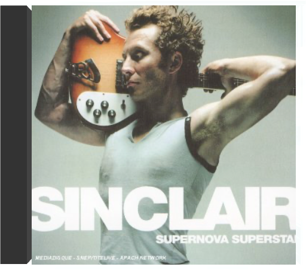
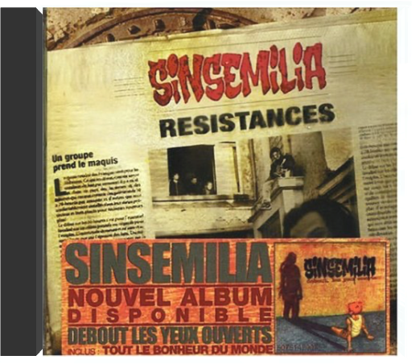
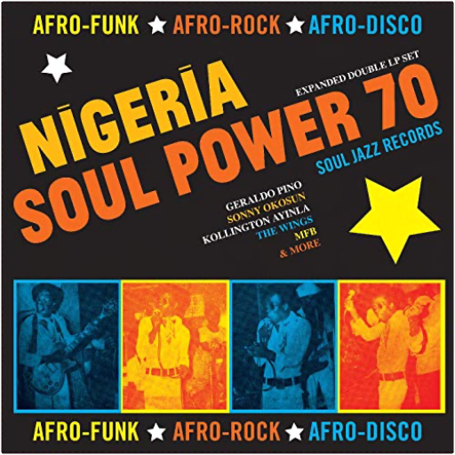

 supernova superstarsinclair  Révélé en grande partie par la scène, Mathieu Blanc-Francard, alias Sinclair, est sans aucun doute l'un des artistes français les plus funky de cette décennie. Ses précédents albums l'ont d'ailleurs prouvé à plus d'un titre. Fidèle à sa renommée, il n'a pas changé ses habitudes et nous a préparé ce quatrième album (qu'il a composé, arrangé et réalisé lui-même) aux petits oignons. Supernova Superstar surenchérit donc avec une palette de rythmes tendances 70's/80's qui vous pousse jusqu'au dancefloor ou – pour les plus mous du genou – vous fait vous trémousser sur vos chaises. Louvoyant entre un funk mâtiné de pop, de ballades groove ("Si j'étais en manque", "Un jour") et surtout de disco rappelant Stevie Wonder ou Earth Wind and Fire ("Supernova Superstar"), Sinclair tire le meilleur parti de ses compositions avec ce quatrième album qui illuminera les nuits funky pour longtemps. —Valérie Dupouy  résistancessinsémilia Avec ce deuxième album, les 10 Grenoblois de Sinsemilia confirment leur position de meilleur collectif reggae de la scène française. Leur hargne dispensée en perfusion continue, Sinsemilia excelle dans le rôle du porte-parole empêcheur de tourner en rond. Devenu la mascotte des réformés du service militaire depuis "P4", chanson de ralliement extraite de leur premier album Première récolte, Sinsemilia s'engage à débiner tout porteur d'uniforme. Cette fois, la colère rythmée de ces anticonformistes s'acharne sur le pauvre "Douanier 007" ainsi que sur le "Défenseur de la paix". Et si les fonctionnaires en prennent pour leur grade, ils vilipendent aussi certaines formations politiques comme le Front national. Les treize brûlots de Résistances ont été enregistrés à Bruxelles en 1998, avec l'aide d'un invité de poids, le Dj Macka B, maître du ragga anglais. Avec lui, l'album déborde d'une énergie urbaine fouettée d'un orgue Hammond, complément roots indispensable aux afficinados du son jamaïcain. —Sabrina Silamo |  Avec ce double LP sorti en 1995, les Smashing Pumpkins entraient dans l'histoire du rock par la grande porte, tenue par David Bowie en personne (le groupe le plus intéressant et le plus créatif qu'il ait jamais entendu). Pourtant, rien ne prédestinait ce gang de Chicago, ni grunge ni metal, ni pop ni punk, ni gothique ni psychédéliques, à enregistrer l'album de l'année pour les lecteurs réunis de Rolling Stones, de Request ou de Spin. Billy Corgan, leader perturbé nourri d'influences 70's plus ou moins avouables, de Cure à Van Halen, décide alors de construire The Wall de la Generation X. Son opéra rock lui permet d'exorciser en 28 titres répartis en 2 sections, "Dawn To Dusk" et "Twilight To Starlight", ses propres démons. Cet exercice narcissique, émotionnellement saturé et enrobé de harpe et de piano, placé sous la tutelle de Flood (U2, Depeche Mode) et d'Alan Moulder (My Bloody Valentine, Nine Inch Nails), donne un concept album gargantuesque qui, à la manière du "Double Blanc" des Beatles, place les Smashing Pumpkins hors classement. Rock épique aux visions grandioses, Mellon Collie and the Infinite Sadness reste cependant un album truffé de hits incontournables "Bullet With Butterfly Wings", "Zero", "Fuck You (An Ode To No One)" "Tonight Tonight", etc. Aucun superlatif n'y suffirait. —Sabrina Silamo  nigeria soul power 70soul jazz records Soul Jazz Records' Nigeria Soul Power 70 album showcases the influence of funk, rock and disco on Nigerian music during the 1970s. Originally released as a now-long-out-of-print collectors' 7' RSD box, this fully expanded album release now also includes extra tracks from Sonny Okosuns, Wings, Chief Kollington Ayinla and more. While for many people the fusion of funk and jazz music with Nigerian rhythms and aesthetics began with Fela Kuti and his afro-beat sound, in fact this can be traced further back to the phenomena of the 1960s Nigerian artists and house bands in nightclubs and hotels who interpreted US soul and pop music with a local flavour and none more so than Geraldo Pino, the 'African James Brown' who features heavily in this collection. Other similarly inspired Nigerian funk and soul artists featured here included Tony Grey and his Ozimba Messengers and Don Bruce and The Angels. Nigeria Soul Power 70 includes a number of tracks from the group Wings originally known as BAF (Biafran Air Force) Wings, an army band formed during the Biafran civil war in Nigeria. The groups' heavy mixture of funk, rock and African styles was popular among many Nigerian groups at the time. Beneath the shadow of the few Nigerian artists who signed international recording deals in the 1970s ' Fela Kuti, King Sunny Ade, Chief Ebenezer Obey ' lies of vast wealth of largely undiscovered musical transmutation and cultural cross-pollination, and included here are heavy afro-funk/rock and disco tracks from artists such as the legendary Sonny Okosuns as well as rare cuts from little-known outside of Nigeria - groups such as Colomach and MFB. Most of these obscure artists signed to major labels in Nigeria in the commercial slipstream that opened up as Philips, Decca and EMI tried to emulate the international success of the big three international Nigerian artists. Finally featured here is Kollington Ayinla, one of the co-founders of Nigerian Fuji music, who gives us perhaps the heaviest of all tracks on this album. Ayinla is the great moderniser of the Fuji sound and in the late 1970s began adding Bata drums and synthesizers to his authentic music to create a powerful and heavy new fusion of traditional and modernist aesthetics, embracing both new technology and experimentation while rooted firmly in Nigerian historical lineage. |

Julien
Collection Total:
1 944 Items
1 944 Items
Last Updated:
Apr 16, 2022
Apr 16, 2022


 Made with Delicious Library
Made with Delicious Library